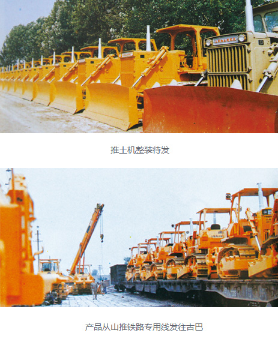

我要询价
企业邮箱
Language
中文
English
Français
Pусский
Español
Português
首页
走进山推
了解山推
科技创新
发展历程
品牌文化
社会责任
山推荣誉
联系我们
分支机构
山推股份现有5家控股子公司、6家全资子公司和5个事业部
山推印象
拥有核心技术，具有国际竞争力，可持续发展的工程机械制造商。
新闻中心
山推新闻
专题报道
媒体视角
行业动态
视频中心
公告信息
视频中心
拥有核心技术，具有国际竞争力，可持续发展的工程机械制造商。
国之重器－山推行
讲述充满中国智慧的机器制造故事，展现了中国装备制造业30年来的成就。
产品中心
推土机
装载机
混凝土机械
消防/高空作业车
配套件
产品3D展厅
山推E家
国之重器，品质之选。山推纯正部件让您的设备拥有更持久的生命力。
二手机械
以性能优良而价格适中的再制造产品，满足您对产品性能的需求
客户服务
技术服务
营销网络
配件支持
客户培训
服务故事
在线留言
营销网络
山推在全国设立28家代理公司，建立了完善、系统的服务网络。
配件支持
为延长机器的使用寿命，最大化的为客户创造更高的收益，请选择使用山推纯正零部件！
投资者关系
股票信息
公司治理
股利分配
定期报告
最新公告
投资者在线
风险教育课堂
股票信息
1997年1月“山推股份”在深交所挂牌上市，股票代码： 000680
风险教育课堂
融资融券投资者怎样进行上市公司网络投票？
人力资源
人才战略
招聘职位
在线应聘
应聘须知
报到须知
我在山推
人才战略
“以人为本”是山推企业文化的重要理念
人才战略
使得每一位有理想、有能力的人都能在各自的岗位上尽情发挥，实现自我抱负！
首页
走进山推
新闻中心
产品中心
客户服务
投资者关系
人力资源
400-666-3666
山推全国统一服务热线
地址：山东省济宁市327国道58号山推国际事业园
总机：0537-2909999
邮编：272073
网址： www.shantui.com
填写您的疑问和需求
在线询价
36年回顾
山推工程机械股份有限公司创建于1980年，是集研发、生产、销售铲土运输机械、路面及压实机械、建筑机械、工程起重机械等工程机械系列主机产品及关键零部件于一体的国家大型一类骨干企业
1980年-1985年
1986年-1990年
1991年-1995年
1996年-2000年
2001年-2005年
2006年-2010年
2011年-2015年
1980年-1985年
1985年
1985年山推先后获得了年度局级一等节能先进企业、山东省设备管理优秀单位、山东省机械工业系统节能先进单位等殊荣。
1984年
山推总厂的企业管理，从建厂开始就被当作一项治厂之本的工作来抓，管理水平得到不断提高，逐步由粗放管理转为科学管理，并积极向现代化管理迈进。从1984年第一季度到抓管理上登记全面提高企业素质验收前，采取分线检查、总结成绩、找出差距、提出措施、限期整改的方法，使各项工作在整顿中巩固提高，在巩固提高中进行再整顿，再提高。
1983年
1982年
山东推土机总厂建立的时，固定资产原值为2569万元，占地面积为517538平方米，建筑面积为170861平方米，其中厂房建筑面积为83340平方米，宿舍建筑面积为45514平方米，文化福利、生产辅助等其他建筑面积为42007平方米。
1981年
山推总厂成立后,主导产品为D85A-18推土机，从1981年开始试制投产,采取的是KD方式生产,结束KD生产方式后，名为TY220推土机.右图为:第一台D85A-18推土机1981年落户首都钢铁矿山公司（迁安）,矿山作业运行时间23000多小时，经过3次大修，使用期为28年9个月。
1980年
追溯到上而给世纪八十年代，为改变中国当时大马力推土机全部依托进口的局面，填补国内180马力以上推土机的空白，国内第一机械工业部在济宁实施建设大马力推进机引进项目。1980年1月1日，将原济宁机器厂、济宁通用机械厂和济宁动力机械厂三家企业合并，成立山东推土机总厂
1986年-1990年
1990年
山推推土机累计销量突破2000台；被国家经贸部批准为进出口自营权企业；TY220推土机获国家唯一金质奖章
1989年
建厂以来，我厂由于先后从日本、瑞士、西德、美国等国引进技术和设备，以及产品不断扩大出口，因此，外事往来比较频繁，每年都有一些外宾来厂参观访问、考察、洽谈贸易、安装调试设备和进行技术交流，同时为了学习外国先进技术和管理方法，前往引进技术与设备的国家进行实地考察等。
1987年
为了保证产品销售任务的完成，自1984年对销售实行了承包责任制，调动了职工的积极性，增强了责任感，从而改变了过去等、靠、要的被动局面。大家开动脑筋，出谋划策，改革经营管理，转变经营思想，改变经营方式，建立多渠道、少环节、开放的产品经营体系，搞好市场预测，按照以销定产，扩大服务领域，使得销售任务一年比一年完成得好。1987年累计销售推土机1000台。

1988年
组成山东推土机总厂的原三个厂，生产设备基础都比较差。随着国家经济的发展基本建设的需要，必须对工厂的设备设施进行技术改造，厂房扩建加大，设备填平补齐，增加精、大、稀设备，新上生产线，提高企业装备素质，使山推厂成为名副其实的大马力推土机生产厂。因而，建厂后始终把技术改造作为工作重点来抓。1980-1988年中，每年都安排了重点技术改造项目。
1986年
自1979年以来，共参加全国性展会32次，举办产品展览23次。如1980年长沙全国机电产品展销会；1984年北京中国新产品展销会；1985年深圳中国重型机械公司产品展销会；1986年参加广州春季交易会，展出了山推厂产品TY220推土机和NT855发动机的连杆毛坯锻件。会上接受了澳大利亚客商的订货，样机直接发往澳大利亚，并应邀参加在澳大利亚举办的工程机械国际博览会。
1991年-1995年
1995年
1995年5月30日，山推与日本小松株式会社合资成立小松山推工程机械有限公司
1994年
一次性出口秘鲁180台推土机，同年被评为中国明星企业
1993年
山东山推工程机械股份有限公司成立
1992年
山推政治、文化 、生活
1991年
山推90年代建成的国内最大的间歇式推土机总装线
1996年-2000年
2000年
2000年6月15日，在山推股份公司装配分厂门口隆重召开DG70吊管机下线仪式。山工集团董事长王富启、股份公司副总经理江奎发表了热情洋溢的讲话，许广谊总经理主持仪式。山工集团、山推股份、山推机械领导出席。
1999年
1999年6月30日，10：00，在履带厂门口隆重举行了两台YZ12压路机试制成功庆典大会。山东工程机械集团、山推股份公司领导到会祝贺。
1997年
1997年1月22日上午9时25分，“山推股份”在深圳交易所挂牌上市并开盘交易，开盘价8元，股票总上市量10110万股，其中新发行8860万股，内部职工股1250万股，募集资金3.7亿元。
1998年
1998年12月25日10：00，山推股份公司举行山推牌TY220推土机5000台下线庆典活动。王富启董事长向第5000台TY220用户中铁二十局设备处王存满处长递交车钥匙，并颁发“5000台”纪念证书。在总装线上，济宁市副市长刘宝庭、国资委袁国平副主任、王富启董事长、张务水书记、王存满处长、股份公司劳模装配分厂职工唐伟为第5000台下线剪了彩。披红挂绿的第5000台TY220推土机在众人的簇拥下，轰鸣着缓缓驶出总装线。
1996年
1996年11月，山推产品被中国质协、建设机械设备委员会评为“用户满意”产品。1987年至今，山推已经连续八次获此殊荣。
2001年-2005年
2005年
中国首台最大吨位的SR33YR垃圾压实机顺利下线
2004年
“山推”商标被国家商标局认定为中国驰名商标
2003年
2003年10月29日，山推国际事业园开园，山推结构件公司、山东彩桥驾驶室公司、山推欧亚陀公司三家合资企业入驻，目前该事业园已发展成为国际化的工程机械产业基地。
2002年
2002年2月，由履带厂开发研制的YZ18液压振动压路机，顺利下线。
2001年
2001年9月，山推牌TY320C推土机在装配分厂试验车间顺利下线，标志着“山推”系列推土机在技术性能和结构造型水平上又上了一个新的台阶。
2006年-2010年
2010年
“感恩、激情、超越”
2009年
2009年，被国家人事部批准设立博士后科研工作站，同年召开首届科技创新大会。
2008年
山推在武汉重拳出击，投资收购了湖北楚天建筑机械公司，成立山推楚天工程机械有限公司，实现了从铲运机械、道路机械到建筑工程机械的战略布局。
2007年
山推牌推土机荣获中国名牌产品称号
2006年
山推工程机械研究院本部设在山东济宁，为国家级研究院，位于山推国际事业园B区。各种高级技术人才涉及液压、电子、电气、机械设计、材料、力学等多种专业，主要负责公司新产品研发、试制、试验等工作。
2001年-2005年
2015年
公司首台SD16(国Ⅲ)推土机成功下线。
2014年
山推产品亮相俄罗斯国际建筑及工程机械展览会CTT 2014。
2013年
山推推土机SD90-5，荣获“中国工程机械年度产品TOP50（2013）技术创新金奖”。
2012年
3月2日上午，在推土机事业部总装工厂隆重举行推土机第50000台下线庆典仪式。公司董事长张秀文按动山推第50000台推土机下线仪式的按钮，宣布山推第50000台推土机成功下线。这一激动人心的历史时刻标志着50000台不仅仅是一个数量的积累，更是山推管理水平、生产规模、制造技术、研发能力、销售能力等综合能力的体现，标志着山推推土机产业整体实力进一步增强，是从量变到质变的飞跃。
2011年
2011年4月18日，山推混凝土机械武汉产业园一期项目在武汉东湖新技术开发区落成。占地530亩的武汉产业园力争在未来的5-10年内，达到年产高端混凝土搅拌站1000台、 臂架泵5000台、搅拌运输车10000台、拖泵1500台的生产能力，将成为山推实现“十二五”战略发展目标的重要支柱产业。 4月17日，山推抚顺产业园在辽宁省抚顺市沈抚新城隆重举行了奠基仪式,计划总投资40亿元，建设用地800亩。其中一期项目建设用地400亩，厂房面积10.8万平方米，用于生产高空作业车、随车起重机、消防车和履带起重机等产品；二期项目主要用于汽车起重机的研发、生产以及工程机械再制造。项目达产后可形成年产各类工程机械12000台的生产能力，实现百亿产值。
企业邮箱
官方微博
山推E家
产品3D展厅
分支机构
事业部
全资子公司
控股子公司